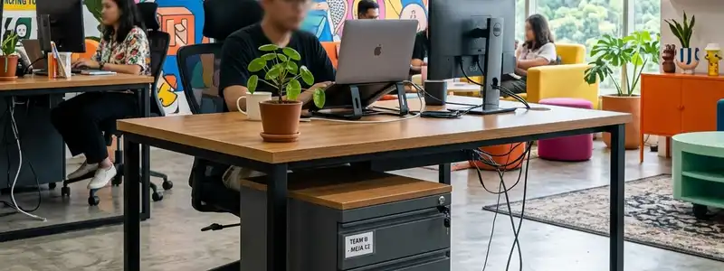
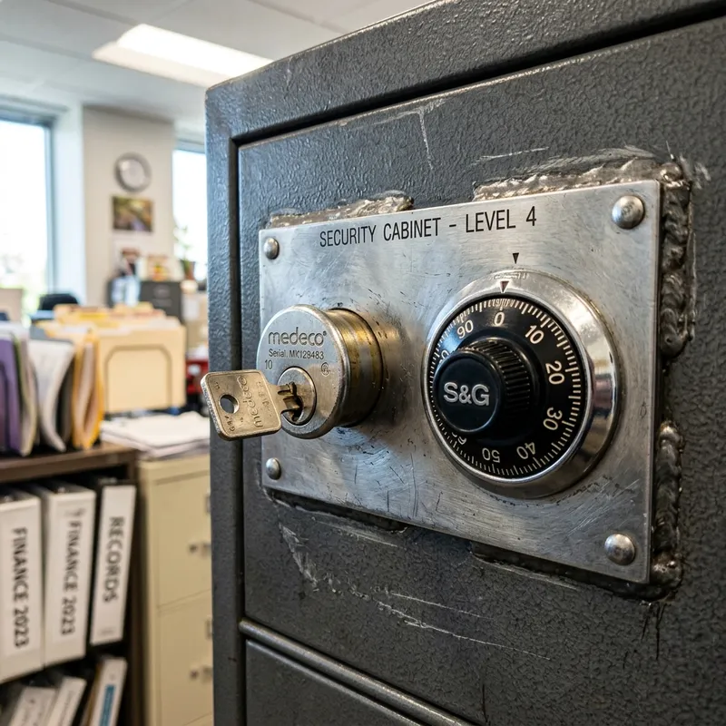

Pengantar: Mengapa Lemari Besi?
Dalam ekosistem kerja perkantoran modern di Indonesia yang bergerak serba cepat, pengelolaan informasi merupakan jantung dari operasional perusahaan. Seiring berkembangnya bisnis, volume dokumen fisik—seperti kontrak hukum, surat tanah, berkas kepegawaian, hingga sertifikat penting—akan terus bertambah. Disinilah pentingnya memiliki fasilitas penyimpanan yang bukan sekadar luas, melainkan juga tangguh dan sangat terproteksi.
Lemari besi sering kali dianggap sebagai investasi opsional bagi sebagian perusahaan, namun sebetulnya benda ini adalah garis pertahanan terakhir untuk menjaga aset vital dari berbagai risiko eksternal yang tidak terduga. Artikel ini akan membahas secara mendalam 5 alasan krusial mengapa setiap kantor wajib memiliki setidaknya satu lemari besi arsip berkualitas tinggi.
1. Perlindungan Maksimal dari Risiko Kebakaran
Salah satu alasan paling utama mengapa kantor membutuhkan lemari besi adalah ketahanannya terhadap paparan suhu ekstrem. Bencana kebakaran dapat terjadi kapan saja dan di mana saja, sering kali dipicu oleh korsleting listrik atau insiden kecelakaan di dalam maupun di luar area gedung.
Lemari besi arsip berkualitas umumnya dilapisi oleh material tahan api tingkat tinggi (fire-resistant) dengan proteksi ganda. Konstruksi bajanya mampu meredam rambatan panas, sehingga dokumen berbahan dasar kertas maupun media penyimpanan digital yang berada di dalamnya tidak ikut hangus terbakar. Sertifikasi keamanan biasanya menjamin perlindungan selama jangka waktu tertentu, memberi kesempatan bagi tim pemadam untuk menjinakkkan api sebelum suhu internal merusak arsip penting Anda.
2. Mencegah Tindak Pencurian dan Espionase Bisnis
Selain faktor bencana alam, risiko keamanan internal dan eksternal selalu mengintai perusahaan. Kejahatan seperti pencurian berkas rahasia klien, pencurian data keuangan, atau bahkan pembobolan aset likuid dapat melumpuhkan kredibilitas bisnis seketika.
Lemari besi modern telah dilengkapi dengan mekanisme penguncian canggih, mulai dari kunci kombinasi ganda, pengaman biometrik (sidik jari), hingga sistem electronic keypad anti manipulasi. Struktur bajanya yang solid membuatnya sangat sulit dijebol menggunakan alat potong ringan maupun palu berat. Dengan menyimpan dokumen sensitif di dalamnya, akses hanya dapat diberikan kepada pihak berwenang, mempersempit peluang kebocoran informasi strategis kepada kompetitor maupun oknum tak bertanggung jawab.

PROMO MERDEKA 2026
Diskon 17% Untuk Pembelian Lemari Besi 2 Pintu
KLAIM PROMO VIA WA3. Ketahanan Terhadap Kondisi Iklim Indonesia
Indonesia merupakan negara beriklim tropis dengan tingkat kelembapan udara yang sangat tinggi. Lemari kayu maupun rak penyimpanan standar sangat rentan terhadap serangan rayap, jamur, serta pelapukan akibat perubahan suhu ruangan. Dokumen kertas yang disimpan pada medium kayu lama-kelamaan akan menguning, lapuk, hingga tak terbaca.
"Investasi pada lemari baja adalah investasi pada memori kolektif perusahaan. Dokumen yang hilang tidak bisa dibeli kembali dengan uang."
Material pelat baja (cold rolled steel) yang dilapisi menggunakan teknik cat powder coating sangat ampuh dalam mencegah karat (korosi) serta menangkal kelembapan berlebih. Ini menjadikan lemari besi sebagai ruang isolasi sempurna untuk menjaga dokumen fisik Anda agar usianya lebih panjang, bersih dari jamur, dan aman dari pengerat seperti tikus maupun rayap.

Ilustrasi: Detail penguncian ganda berlapis dengan kombinasi gembok mutakhir pada brankas keamanan tingkat tinggi.
4. Menjaga Organisasi Tata Ruang Arsip
Lemari besi tak hanya soal pertahanan statis. Desain struktural bagian dalamnya biasanya sangat mendukung sistem manajemen pengarsipan modern. Rak bersusun yang dapat disesuaikan tinggi rendahnya (adjustable shelves) memungkinkan fleksibilitas yang sangat tinggi dalam menyortir binder, map ordner, kotak arsip, maupun boks uang tunai.
Karyawan tidak perlu lagi membongkar tumpukan kotak di gudang, karena tata ruang pada lemari baja membantu menjaga struktur alfabetis atau kategoris dengan ketat. Ruang kerja menjadi jauh lebih profesional, bersih dari dokumen berserakan, serta mempercepat proses pencarian arsip, yang pada ujungnya akan meningkatkan efisiensi waktu operasional kantor.
5. Kepatuhan Terhadap Standar Hukum (Compliance)
Beberapa jenis industri, seperti lembaga keuangan, perbankan, firma hukum, dan penyedia layanan kesehatan (rumah sakit/klinik), tunduk pada regulasi pemerintah yang sangat ketat terkait kerahasiaan data (Data Privacy). Standar Operasional Prosedur (SOP) hukum mengharuskan rekam jejak finansial, data medis pasien, maupun berkas identitas pribadi nasabah harus disimpan di fasilitas tertutup bersertifikasi.
Menggunakan lemari arsip baja menjadi bentuk komitmen nyata perusahaan terhadap kepatuhan regulasi hukum (compliance). Jika perusahaan menghadapi audit mendadak (sidak) dari instansi pemerintah, bukti bahwa perusahaan telah menyediakan penyimpanan baja yang terkunci dengan aman dapat membebaskan perusahaan dari sanksi hukum ataupun denda kelalaian.
Kesimpulan
Singkatnya, memiliki lemari besi atau brankas tahan api di lingkungan perkantoran bukanlah sebuah kemewahan, melainkan suatu keniscayaan di era modern. Lima alasan kuat—mulai dari proteksi kebakaran, keamanan pencurian, kelembapan, efisiensi penataan, hingga kepatuhan regulasi hukum—membuktikan bahwa pengadaan lemari besi adalah asuransi fisik jangka panjang. Pastikan Anda memilih ukuran dan tingkat ketebalan pelat yang sesuai dengan proyeksi pertumbuhan bisnis Anda dalam lima tahun ke depan.
PERTANYAAN YANG SERING DIAJUKAN (FAQ)

BUDI SANTOSO
Spesialis Penataan Arsip & Keamanan Kantor dengan pengalaman lebih dari 10 tahun mendampingi ratusan perusahaan dalam mendesain ruang penyimpanan yang optimal dan terlindungi.